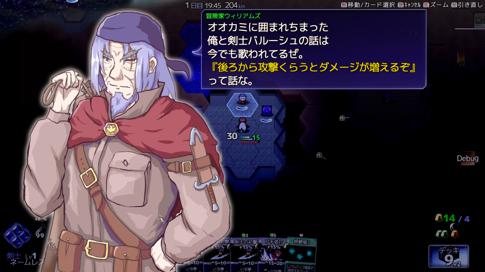
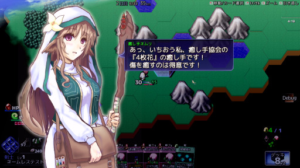
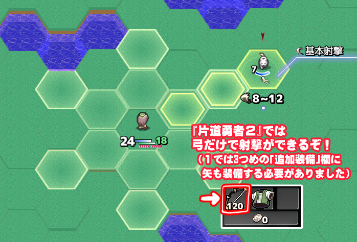

シルバーセカンド開発日誌
片道勇者2 1/1
次のページ | 前のページ
■
2024-06-22 (土) 片道勇者2開発+13 第1ストーリー実装中▼まだ亡くなった人に関わる後処理でドタバタしていますが、
溜まっていたウディタの修正も片付いて
（と思ったそばから色々バグ報告が飛んできて
対応してる間に何度も1日がつぶれたりしつつ）、
少しずつ自分のゲーム開発にも着手できるようになってきました。
今回はウディコン準備中！
というお話と『片道勇者2』のお話です！
◆ウディコンの準備中！
そろそろ3週間前になるので第16回ウディコンの準備も始めています！
この時期にやるのはシステム改修ですね！
たとえば私(silversecond.com)みたいな野良のドメインだと、
これまでウディコン運営側からGmailさんちに
エントリー関連メールなどを送っても全部スパム扱いになっていたのですが、
今年ちょっと話題になったGmail対応のメール設定である
SPF設定だとかDKIM設定などをすればちゃんと届くようになるらしいので、
その辺りをいじったりしてました。
他にも次回コンテストに向けての記入欄の追加や反映箇所を足したり！
見えないところですが毎年地味にいじってるんですよ。
いちおうは色々動くようになったと思いますが、
また開始1～2週間くらい前になったらサンプルとして
いつも通り私の片道勇者のデータでも入れて再確認しようと思います。
しかしこういったことを話してると、
ちょっとしたWebシステム（？）を作れる人が
コンテストやるのはすごく向いてると感じます！
特に「エントリー情報修正フォーム」からの
日々の修正要請に人力で対応してたらその作業量だけでも
倒れちゃいますからね！
そういった部分をなるべく自動で処理できるようにしていくのは大事です。
◆片道勇者2 初期ストーリー作成中！
久々に『片道勇者2』にまともに着手できる日ができました。
クラス・スキル・アイテムなどのデータ作りはまだ2割くらいですが、
いったんそれは横に置いて、いったん
通しプレイができるように『第1ストーリー』を実装中です。
その過程で将来の仲間キャラの顔見せをするイベントも
入れようと思い立ち、ウキウキしながら足しています。

↑この人は冒険家ウィリアムズ。最初のストーリーで
「聖なる神殿が開いてると思ったらもう荒らされた後だったぜ」
みたいな話をしてくれます。
もしかしたら覚えておられる方もいらっしゃるかもしれませんが、
『片道勇者1』の開始時TIPSに、剣士バルーシュと
冒険家ウィリアムズという人物がオオカミと戦闘しているときに
『後ろから攻撃を受けるとダメージ1.5倍になるぞ！』
みたいな会話をするものがありました。
そのうち、剣士バルーシュの方はプラス版でNPCとして登場したのに、
冒険家ウィリアムズはどこにも出てきませんでした。かわいそう。
で、さっき『第1ストーリー』と言いましたが、
『片道勇者2』では何段階かのストーリー段階をもうけて、
進行していくにつれて色んな要素が増えていく形にする予定です。
そんなに段階数はないと思いますけどね！
最初の数段階は固定ストーリーになるので、
途中でネムリや今回のウィリアムズみたいな
将来のランダム仲間キャラと遭遇して会話する、
という形にしていきたいなと思っています。
完全ランダム遭遇だけだといまいちストーリーが作りにくくて！
ひとまず第1段階のストーリーだけ作ってみて、
ストーリーラインとしてどんなものが作れそうかの
手応えを掴んでいきたいと思います。
ストーリー別に最低限のイベントが
いくつか増えるだけでもローグライクとしては
十分なストーリー性を感じられることもあるので、
そのあたりちょっと試行錯誤してみたいですね！
トッピング程度だけでもだいぶ変わるんですよこういうの。
そして第16回ウディコンの作品募集開始まであと3週間！
まもなくです！
なんとかできそうなめどは付いてきましたので、
あとは変なタイミングで変な事故が起こらなければできると思います！
さすがに開発中の方はもうテスト段階に入ってないとヤバいかもしれません！
いちおう2025年もやるつもりですので、
待てる方は待ってくださるのも手ですよ！
（それに他にもゲームコンテストはありますしね！）
ということで、ウディコンを楽しみに待ちつつ用意を進めていきます！ ■
2024-02-17 (土) 片道勇者2開発+12 仲間処理を作成中！▼ぬおおお全然進まないぃぃと言いながらも
ぼちぼちやってるウルフです！
たまたまXヶ月以上ぶりに介護活動のない日ができたと思ったら
5倍速くらいで進んでしまい、激しい介護活動で
どうも80％くらい消耗してるっぽいと分かってグオオとなっています。
で、ここ最近は『片道勇者2』の仲間キャラの仮搭載に向けて
いくらか作業をしていましたのでご紹介！
【片道勇者2 仲間キャラ仮搭載中！】
現在は、仲間キャラに必要な素材やテキストを仮にでも何個か作ってみて、
仲間関連にかかる作業の見通しを立てるフェイズを行っています。
どこかで1回やらねばならなかったんですが、キャラのセリフを
書いたりするのが今の状況だとしんどすぎてずっと放置されっぱなしでした。
※↓癒し手ネムリ(前作1の薬師ネムリの孫！)

その間は仲間キャラの「イラスト作成」を進めることが多かったのですが、
そんな中、先日ちょっとだけ時間や余力ができたので、
その隙に猛スピードで仲間キャラ1体の
ストーリー周りの設計や処理を書いていました。
おおよそめどが付いてきたので、今作で目指したい
「仲間キャラのお話周りの方針」について整理してみます。
【片道勇者2の仲間キャラの「お話」はどうなる？】
今回の仲間キャラ作成のお話部分は
「1周あたりの情報量は前くらいのままに、
前作より情報量やシチュエーションを増やしたい！」
が目標です！
前作『片道勇者（プラス）』よりも仲間キャラの遭遇率を上げると同時に、
お話面でもいろいろと増やしたいなと思っています。
もちろん、読むのが面倒にならない程度の置き方を考えながら！
いい感じのハシ休めポジションを維持したいですね。
◆出会いのパターンを増やしたい！
今回は仲間と遭遇できるシチュエーションを増やすことで、
「狙って使う感」と「飽きにくさ」を増やしたいと考えています。
たとえば「普通にフィールドを歩いている仲間を見つけた」という
シチュエーションとは別に、
「街が敵に襲われてる中で助け出した」みたいな大変な状況でも
仲間と出会うことがあります！
そういった状況で助けたりすると、仲間にするのに必要な
カリスマ（魅力）が少なく済んだり、別のボーナスを
代わりにもらうこともできる、みたいなパターンを用意する予定です。
※↓ これは旅の途中、ネムリから救援を求める手紙が届いたシーン

あと、スタート地点に仲間を「住人」として配置して、
「いつもより高いカリスマを消費することでスタート地点から
仲間を連れていくこともできる！」みたいになれば
またプレイ方針が変わってくるでしょう。
1人でも確定で仲間を連れていけるなら、
前作では条件がそろいにくくて狙いづらかった
「仲間前提のビルド」も組みやすいはず！
「でも最初から前作相当の強さの仲間がいると強すぎないかな！？」
と思ったりもするので、バランス調整はうまいことやりたいですね。
◆何度も出会ったら違う話が見られるようにしたい！
発想的には別に大した話じゃないのですが、今作は周回を重ねると
「前には聞けなかったお話」が聞けるようにしたいと思っています。
前作では遭遇率がそもそも低かったのもあって
同じ話だけでも何も問題なかった感じはあるのですが、
今回はもっと出会いやすくなる予定ですからね！
具体的には、「すでに1つめの話を全部聞いた状況」で
別の世界でまたその仲間に会ったとき
「その話は聞いたよ / 他の話をしてよ」みたいに言えば
別の話をしてくれるようになります。
とりあえず遭遇率に応じて2～3回分以上用意して、
ほどほどに新鮮味を出していきたいところです。
あと、この手法なら
「1回のプレイでは話すには多い情報量」を
1キャラクターに詰め込んだとしてもプレイごとに
徐々に伝えることができます！
スポイルしなきゃいけないほどの設定や余談が思いついても安心！
最後の方は全体のストーリー的には重要でない話が
多めになったりするかもしれませんがそれはそれで。
ネムリ(2世)が最初から最後までナユタの実への愛を語るだけで
終わるエピソードだって作れます。
◆「仲間に焦点を当てたクエスト」も作りたい！
前回は理騎士クエストやら忍者クエストなどがありましたが、
今回は「仲間に焦点を当てたクエスト」も作りたい！
と思っています。これは現状思ってるだけで
設計予定に入れただけの状態です。
というのも、
「知らないキャラに話しかけてクエストを始める」よりは、
知ってるキャラに話しかけて新クエストが始まった方が
プレイヤーの方もなじみやすいしキャラの深掘りもできて一石二鳥です！
人間は基本的に「身内から」助けをもとめられる方が
やる気が出やすいので当然といえば当然なのですが、
それを意識してやってくれているゲームは意外と少ない気がします。
たとえばスマホゲームでも、クエストの始まりが
「プレイアブル（プレイヤーが使用可能な）キャラの誰か」
からの依頼なのか、「知らないモブキャラクター」からの
依頼なのかでちょっとやる気が変わった経験をされたことはないでしょうか。
多くの場合、「知ってるキャラ」からの依頼の方がやる気がでると思います。
ものすごい当然の手法ではありますが、
いざ自分がゲームを作ると、うっかり
「知らない人」ばっかりから依頼を出しがちです。
『そのクエスト依頼、うまくやって何とか
身内のキャラから出せないかな？』
という点はこれからちょっと意識していきたい部分ですね！
【余談：矢を専用に装備しなくても弓矢が撃てるようになってます！】
以前の記事にコメント欄でいただいたので
こっそり返信してたのですが、実は『片道勇者2』では前作と違い、
弓矢の「矢」を追加装備欄に装備する必要がなくなります！

つまり「狩人の弓[120]」を「武器欄」に装備するだけで、
「追加装備」欄に何も付けなくても120発分の
「木の矢」相当の攻撃が撃てるわけですね！
前作では弓と一緒に「追加装備」欄にも
「木の矢×80」みたいなのを装備しないと
弓が撃てませんでしたが、この仕様はちょっと面倒でしたし、
弓だけしか拾えないこともたまにあって悲しいことになりがちでした。
そして「武器」欄だけで弓矢が撃てるようになったということは、
「追加装備」欄に「破壊の腕輪（ダメージ1.3倍）」を付けたりできて、
射手キャラのビルドにさらなる自由度が生まれます！
いちおう「追加装備」欄に「盾」も装備できるようになりますが、
【「射撃攻撃」と「盾防御」は同じターンには使えない】
みたいな制約は付くかもしれません。
（ただし「盾」の親戚である「追加装甲」を装備していれば、
射撃攻撃してても防御効果を発揮できます。
こんな風に射撃職は、防御力の稼ぎ方にちょっと制限が出ます）
「追加装備」欄に装着できる「特殊な矢」自体は今作でも搭載予定です。
「炎の矢」とか「爆弾矢」みたいなやつですね！
弓を持ってなくても2マス先まで攻撃できて便利、
という要素はこういう形で継承されます！
という感じで、進められる範囲でぼちぼち進めております。
生活は大変ですが、引き続きやれる範囲で
全力を尽くして進めていきます！
確定申告の時期なのでそれも用意しないといけませんね！ うおおお！ 片道勇者2 1/1
次のページ | 前のページ
Copyright © SmokingWOLF / Silver Second